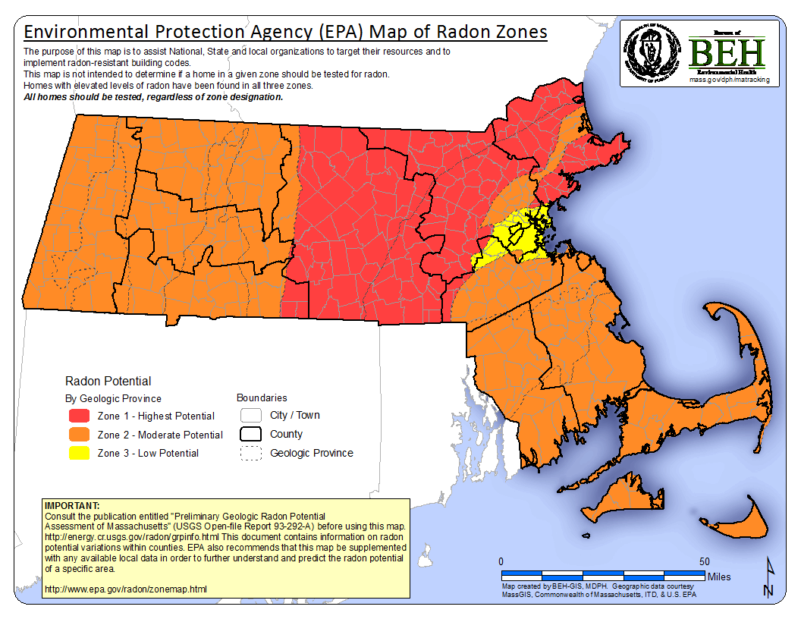

Radon
- Did You Know?
- Radon is a naturally occurring gas that can accumulate in homes and increase the risk of developing lung cancer. The only way to know if your home has a radon problem is to do a radon test.
Radon is a colorless, odorless and tasteless radioactive gas. Radon is created when naturally occurring elements such as uranium and radium in rocks and soil break down during a process called radioactive decay. Once radon is emitted, it migrates upwards to the ground surface through pore spaces in the soil. Radon can enter homes through cracks, joints, cavities and gaps in building floors and walls. Radon gas can also dissolve in well water and become released into indoor air from running water, but groundwater is not thought to be a major contributing source of indoor radon.
In outdoor air, radon is diluted with other atmospheric gases and is present at very low concentrations. However, inside buildings and enclosed spaces radon can accumulate to higher concentrations. The concentration of radon gas is measured in picocuries per liter (pCi/L). A curie is an international unit of measurement of radioactivity, and a picocurie is one-trillionth of a curie.
Radon, Lung Cancer, and Smoking
- Test Your Home For Radon
-
Click here to access the webpage of the Department of Public Health’s Radon Assessment Unit.
Radon gas decays into microscopic solid particles that enter the lungs when inhaled. The particles become trapped in the lungs and decay further, releasing small bursts of energy as they continue to break down. These bursts of energy damage lung tissue and can increase the risk of developing lung cancer over the long-term. In fact, radon is the second greatest cause of lung cancer in the U.S. The EPA estimates that over 21,000 lung cancer deaths in the U.S. each year are related to radon.
If you are a smoker, the potential health consequences of long-term exposure to radon are even greater. Smoking and radon exposure work together synergistically to increase the risk of developing lung cancer up to 10 times greater than the risk to people who have never smoked. Radon is the primary cause of lung cancer among people who have never smoked.
The EPA’s radon guide, A Citizen’s Guide to Radon (http://www.epa.gov/radon/pubs/citguide.html), contains risk tables. These tables illustrate the relationship between smoking, lung cancer, and long-term exposure to different levels of radon.
| Radon Level | Radon Risk If You've Never Smoked | Radon Risk If You Smoke |
|---|---|---|
| Radon Level 20 pCi/L | Radon Risk If You've Never Smoked About 36 people could get lung cancer | Radon Risk If You Smoke About 260 people could get lung cancer |
| Radon Level 10 pCi/L | Radon Risk If You've Never Smoked About 18 people could get lung cancer | Radon Risk If You Smoke About 150 people could get lung cancer |
| Radon Level 8 pCi/L | Radon Risk If You've Never Smoked About 15 people could get lung cancer | Radon Risk If You Smoke About 120 people could get lung cancer |
| Radon Level 4 pCi/L | Radon Risk If You've Never Smoked About 7 people could get lung cancer | Radon Risk If You Smoke About 62 people could get lung cancer |
| Radon Level 2 pCi/L | Radon Risk If You've Never Smoked About 4 person could get lung cancer | Radon Risk If You Smoke About 32 people could get lung cancer |
| Radon Level 1.3 pCi/L | Radon Risk If You've Never Smoked About 2 people could get lung cancer | Radon Risk If You Smoke About 20 people could get lung cancer |
|
Table 1. Radon Risk Tables from EPA's A Citizen's Guide to Radon Note: If you are a former smoker, your risk may be higher than your risk if you've never smoked and lower than your risk if you currently smoke * Lifetime risk of lung cancer deaths from EPA Assessment of Risks from Radon in Homes (EPA 402-R-03-003). |
||
For information on quitting smoking, visit the webpage of the Massachusetts Tobacco Cessation and Prevention Program - http://makesmokinghistory.org/
The U.S. Environmental Protection Agency (U.S. EPA) recommends that radon mitigation systems be installed in homes that have radon levels of 4 pCi/L or higher. Mitigation technologies today can reduce indoor radon levels to 2 pCi/L or lower.
Radon in Massachusetts
The Massachusetts Department of Public Health (MDPH)'s Bureau of Environmental Health (BEH) has a Radon Assessment Unit (RAU), within the Indoor Air Quality Program, that advises and assists residents of the Commonwealth with their radon questions. The RAU also assists realtors, business owners, and facility managers with their questions regarding radon in air or water. You can contact the RAU to learn more about radon or to get information about certified radon mitigation and measurement specialists. The RAU also provides radon testing services to schools upon request. The program can be reached at 1-800-RADON-95 (1-800-723-6695 - in Massachusetts only) as well as at (413) 586-7525 x 3185.
In 1988, the BEH Radiation Control Program and the EPA conducted the Massachusetts State Radon Survey. They found that one in four homes in Massachusetts has the potential to have indoor radon concentrations above the EPA action level of 4 pCi/L. The 1988 survey also found that 1% of Massachusetts homes have radon screening levels of 20 pCi/L or greater. The only way to know if indoor radon levels in your home exceed the EPA’s action level is to test your home.
| County | Number of Samples | Median (pCi/L) | Maximum (pCi/L) | Percent of Samples ≥ 4 pCi/L |
|---|---|---|---|---|
| County Barnstable | Number of Samples 99 | Median (pCi/L) 1.6 | Maximum (pCi/L) 12.5 | Percent of Samples ≥ 4 pCi/L 14 |
| County Barnstable & Dukes | Number of Samples 105 | Median (pCi/L) 1.6 | Maximum (pCi/L) 19.5 | Percent of Samples ≥ 4 pCi/L 15 |
| County Berkshire | Number of Samples 47 | Median (pCi/L) 1.9 | Maximum (pCi/L) 15.7 | Percent of Samples ≥ 4 pCi/L 21 |
| County Bristol | Number of Samples 115 | Median (pCi/L) 1.8 | Maximum (pCi/L) 28.8 | Percent of Samples ≥ 4 pCi/L 22 |
| County Dukes | Number of Samples 6 | Median (pCi/L) 1.2 | Maximum (pCi/L) 19.5 | Percent of Samples ≥ 4 pCi/L 33 |
| County Essex | Number of Samples 203 | Median (pCi/L) 2.8 | Maximum (pCi/L) 52.4 | Percent of Samples ≥ 4 pCi/L 36 |
| County Franklin | Number of Samples 26 | Median (pCi/L) 1.6 | Maximum (pCi/L) 12.6 | Percent of Samples ≥ 4 pCi/L 31 |
| County Franklin & Hampshire | Number of Samples 80 | Median (pCi/L) 1.6 | Maximum (pCi/L) 14.1 | Percent of Samples ≥ 4 pCi/L 23 |
| County Hampden | Number of Samples 125 | Median (pCi/L) 1.3 | Maximum (pCi/L) 22.9 | Percent of Samples ≥ 4 pCi/L 11 |
| County Hampshire | Number of Samples 54 | Median (pCi/L) 1.6 | Maximum (pCi/L) 14.1 | Percent of Samples ≥ 4 pCi/L 19 |
| County Middlesex | Number of Samples 400 | Median (pCi/L) 2.2 | Maximum (pCi/L) 61.3 | Percent of Samples ≥ 4 pCi/L 26 |
| County Norfolk | Number of Samples 171 | Median (pCi/L) 1.9 | Maximum (pCi/L) 30.1 | Percent of Samples ≥ 4 pCi/L 21 |
| County Plymouth | Number of Samples 141 | Median (pCi/L) 1.4 | Maximum (pCi/L) 14.7 | Percent of Samples ≥ 4 pCi/L 12 |
| County Suffolk | Number of Samples 61 | Median (pCi/L) 1.2 | Maximum (pCi/L) 8.0 | Percent of Samples ≥ 4 pCi/L 5 |
| County Worcester | Number of Samples 216 | Median (pCi/L) 2.8 | Maximum (pCi/L) 41.1 | Percent of Samples ≥ 4 pCi/L 38 |
| County Statewide | Number of Samples 1664 | Median (pCi/L) 1.9 | Maximum (pCi/L) 61.3 | Percent of Samples ≥ 4 pCi/L 24 |
Table 2. Results of 1988 Massachusetts State Radon Survey. From EPA’s Map of Radon Zones, Massachusetts. Radon Division, Office of Radiation and Indoor Air, U.S. Environmental Protection Agency. September 1993. |
In 1993 the EPA and US Geological Survey (USGS) created a map of potential indoor radon levels for all counties across the United States. The map divides counties into three zones predicting the levels of average indoor radon concentrations. The foundation for this map is geologic provinces, regions defined by the USGS. Provinces were delineated and assigned a zone on the basis of indoor radon measurements, geology, aerial radioactivity measurements, soil characteristics (such as permeability and drainage), and information about the common types of foundation architecture found in buildings. The EPA then extrapolated zone designation from the province level to the county level by assigning each county the zone of the geologic province that covers the majority of the land area of the county.
- Provinces in Zone 1 have a predicted average indoor radon screening level greater than the action limit of 4 pCi/L and have the highest level of radon potential.
- Zone 2 provinces are predicted to have a radon screening level between 2 and 4 pCi/L.
- Zone 3 provinces have a predicted average indoor radon screening level less than 2 pCi/L.
All homes should be tested for radon regardless of which zone type into which they fall. Zone designations do not predict radon levels inside individual homes.
- Map of radon potential by geologic province with county and city/town boundaries.
- 